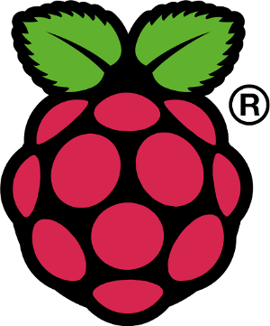
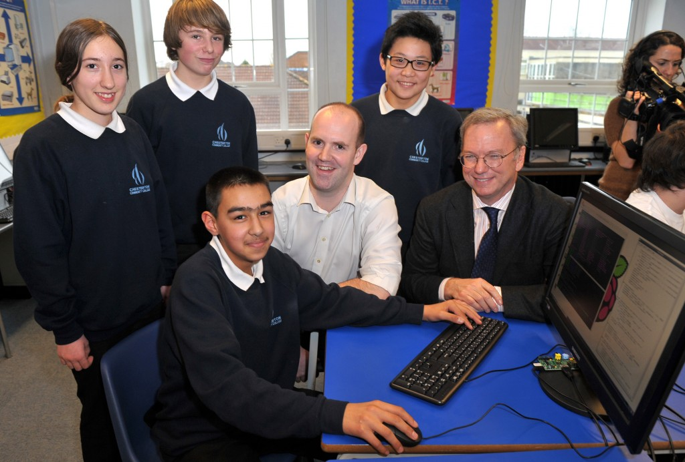
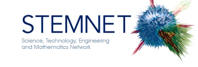
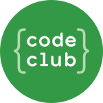
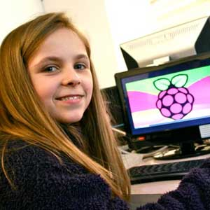
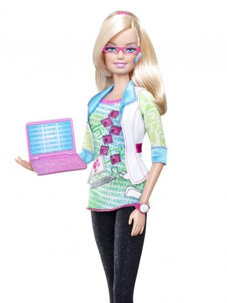
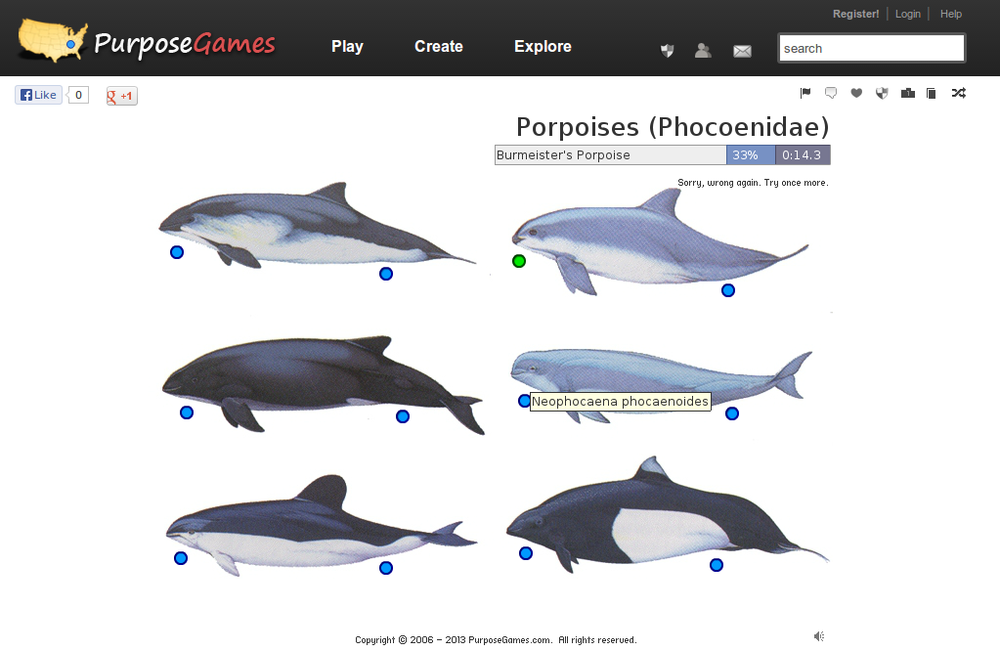

your-project-here.svg your-project-here.pdf
Entering the Age of Open Electronics
Future Making will be a rolling event over two days with around a dozen exhibits plus an hourly short stage show. The target audience is anyone curious, with secondary schools invited to attend if the timing of the event permits. The performers are expected to be engineers, musicians, social scientists, dancers, hackers and visual artists.
There is a new conjunction emerging around open hardware, maker culture, and art. Parallels exist with the explosive change in pop culture pressaged by punk in the late 1970s: from the Homebrew Computer Club trading circuits and information and Iain M. Banks' legacy of utopian technofutures, blending electro-augmented humanity with benevolent AI; from the wearable electronics kits (eg from Adafruit.com — echoing Lady Ada Lovelace, inventor of the computer algorithm) to the latest rounds of sampling and remix.
Open-source hardware allows people to make their own robots, cameras, electrocardiagraph machines and even full computers by downloading schematics and building — incorporating any changes they envisage — and, typically, free open-source software is available to run these projects. 3D printers have helped this adoption of the open-everything ethos.
There also exists a stack of DIY projects based on the new schools computing board — the Raspberry Pi (e.g.: http://www.raspberrypi.org/phpBB3/viewforum.php?f=15 or http://www.raspberrypi.org/archives/tag/music )
The Raspberry Pi is a small cheap computer which is very easy to cobble together with other devices. It has a large community behind it and is one of the drivers behind proposed changes in the schools ICT curriculum.
As part of a trend to open hardware and maker culture the Pi is also a vehicle for localist responses to climate change and peak oil: the more we manufacture locally the more secure we are (the Pi is made in Wales); the less energy we use the less carbon we pump into the atmosphere (the Pi is
The cases of Edward Snowden and Chelsea Manning, however, attest readily to questions around ownership of data and 'patent-trolling' is slowing down the adoption of cheaper industrial processes — we will engage in an age-appropriate exploration of this topic in the context of the international 'broadcast' nature of the internet.
MIST

Programming is back on the UK schools curriculum
Google donated $1,000,000 for Pi hardware in schools



"At Boots science is for boys and pink pricess toys are for girls"; Amy Mather (14-year-old Pi hacker) at Wuthering Bytes, September 14th 2013.

What to do?
Barbie the programmer?! Princess Pi? Pink Electronics?

Games with a porpoise?? 
open-culture-tech.pdf open-culture-tech.svg
{kind=link}
{kind=link}
{kind=link}
{kind=link}